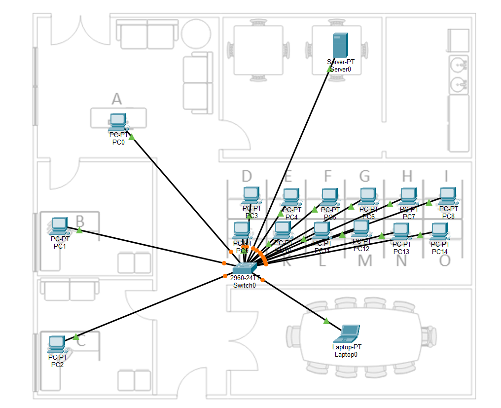
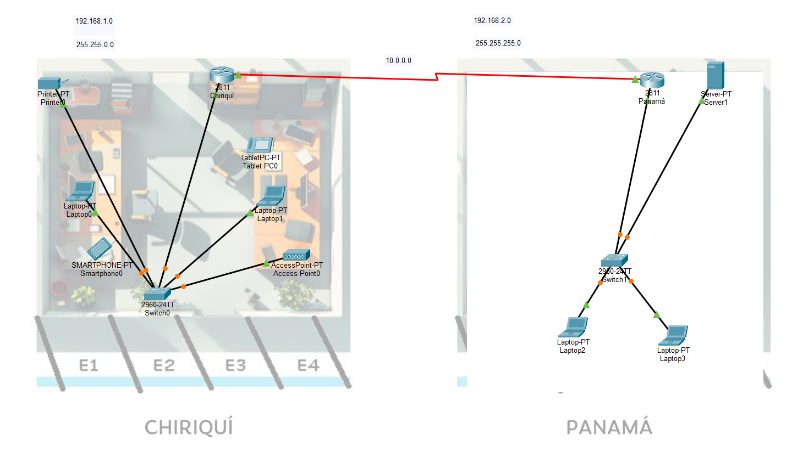
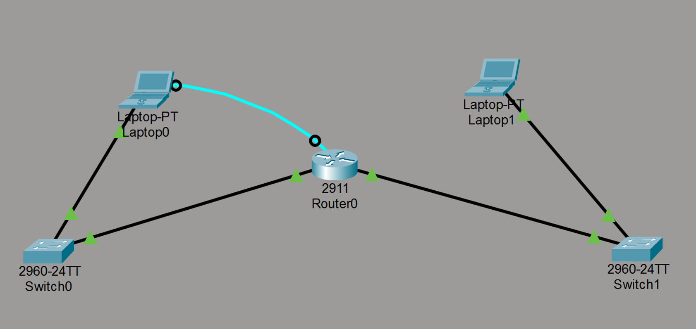
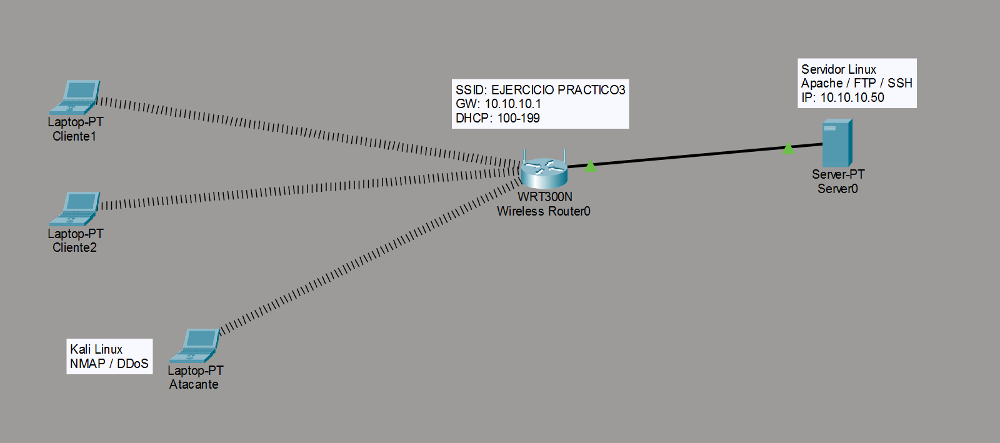
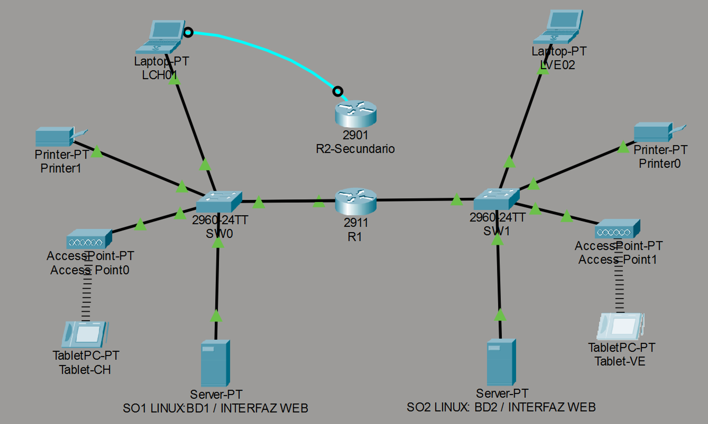

Aplicaciones Android
Proyectos desarrollados en Android Studio (Java).
Calculadora Colegio Belén
Aplicación de calculadora desarrollada en Android Studio, con interfaz de usuario para operaciones aritméticas.
Ver repositorio →Sucesos y Más
Aplicación de listado de noticias desarrollada en Java, con visualización de artículos y navegación entre secciones.
Ver repositorio →MobilBotica
Aplicación móvil desarrollada en Android Studio para la gestión de recargas telefónicas.
Ver repositorio →Universidad Chiricana
Aplicación móvil enfocada en administración de actividades de una universidad.
Ver repositorio →Chiriquí Eats
Aplicación móvil para realizar compras online en restaurantes locales. Proyecto colaborativo.
Ver repositorio →Chinos Café
Aplicación móvil para realizar pedidos de manera personalizada. Proyecto colaborativo.
Ver repositorio →Redes — Packet Tracer
Topologías y configuraciones de red desarrolladas en Cisco Packet Tracer.
Taller Práctico 1
Diagrama de red LAN correspondiente al plano de la empresa PYME Capacitación Inteligente, S.A.

Ejercicio Práctico 1
Red LAN de conectividad de la Pyme Sucesos.

Ejercicio Práctico 2
Red LAN de conectividad de la empresa Mobil Botica, sucursal 1 y sucursal 2.

Ejercicio Práctico 3
Red LAN inalámbrica de la empresa Chiriquí Eats, S.A.

Parcial 2
Red LAN inalámbrica / cableada de la empresa Chinos Café, S.A.
